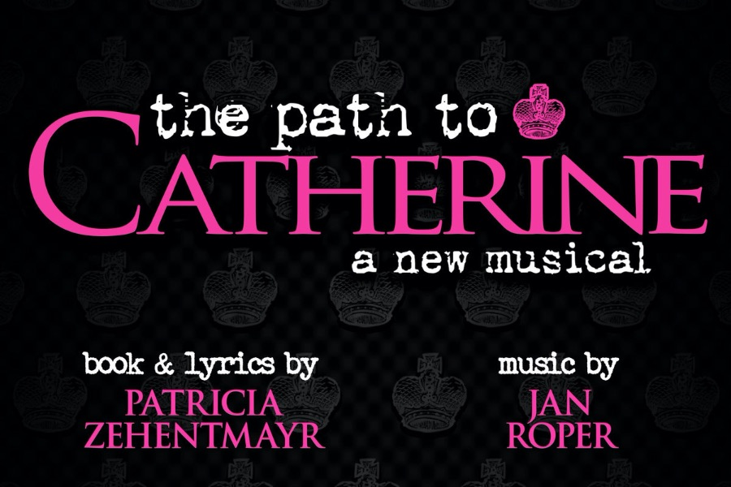
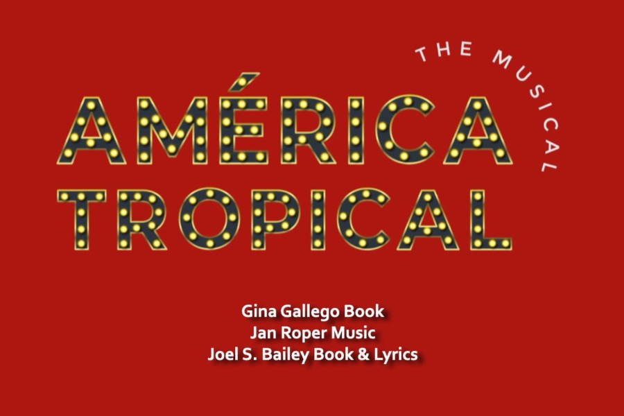
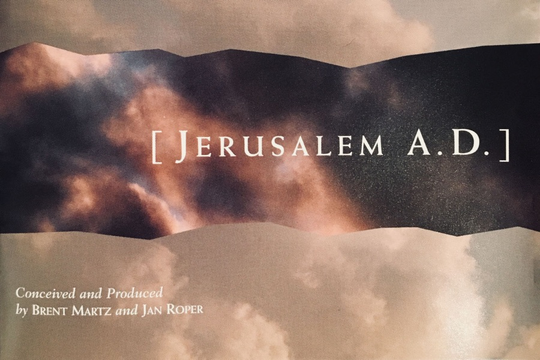

Breathing
Room — S/T —
Room — S/T —
· CIRCA 2000s
Breathing Room
The first record. An original band fronted by Jan — a portrait of a songwriter learning her own voice on stage and tape.
Music for theater, studio, and stage.
Composer, music director, pianist, singer, and teacher building emotionally direct work for live performance and recorded sound.
First and foremost a piano player and a singer — a composer, a music director, a worship leader. A teacher. A coach. A mom of two amazing humans, and a devoted dog owner of Maisie and Coco.
For many years I worked as a singer and performer, playing high-profile gigs and venues, fronting my own original bands Breathing Room and later The Horizons — and releasing two records along the way.
Writing musicals has been a years-long, all-consuming love. The Path to Catherine, América Tropical, City of Light, and Jerusalem A.D. are full-length works I'm immensely proud of — each one a long road of writing, recording, arranging and scoring toward production.
Music directing brings everything together. In 2019 I was honored with the LA Scenie Award for Music Director of the Year. When the world stopped in 2020, I used the silence to write — and two new shows are deep in development. The Path to Catherine had a six-week LA production in 2022; right now we're in the studio with name actors and an innovative producer on a recording project I can't wait to share.



2019 — I went from one show to the next, MD-ing two and three shows at a time. What a year.— LA Scenie Award · Music Director of the Year
Proudly on the Teaching and Accompanist Staff at AMDA · College of the Performing Arts — a school that has launched some of the most successful careers in theater, film, and television.
Lessons and coaching sessions are by referral. Reach out below if you'd like to work together.
Inquire about coaching →The first record. An original band fronted by Jan — a portrait of a songwriter learning her own voice on stage and tape.
The second band, the second record. Wider arrangements, a fuller voice, songs that opened the door to the musicals to come.